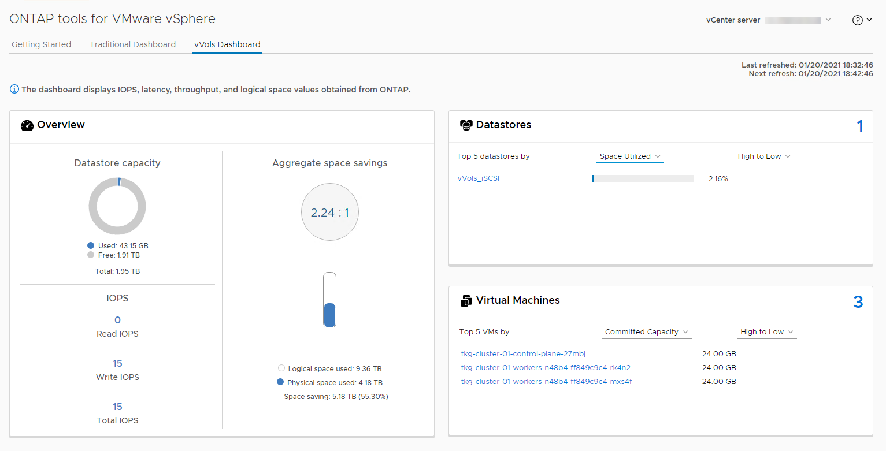

要求變更文件
要求變更文件 編輯此頁面
編輯此頁面 瞭解如何作出貢獻
瞭解如何作出貢獻vSphere的其他功能
資料保護
備份虛擬機器並快速恢復這些虛擬機器、是ONTAP vSphere的絕佳優勢之一、SnapCenter 而使用VMware vSphere的VMware vCenter外掛程式、可輕鬆管理vCenter內部的這項功能。使用Snapshot複本快速複製VM或資料存放區、而不影響效能、然後使用SnapMirror將其傳送至次要系統、以提供長期的異地資料保護。這種方法只儲存變更的資訊、可將儲存空間和網路頻寬減至最低。
利用此功能、您可以建立可套用至多個工作的備份原則。SnapCenter這些原則可定義排程、保留、複寫及其他功能。它們持續允許選用VM一致的快照、充分發揮Hypervisor在執行VMware快照之前靜止I/O的能力。不過、由於VMware快照的效能影響、除非您需要靜止客體檔案系統、否則一般不建議使用這些快照。而是使用ONTAP VMware Snapshot複本進行一般保護、並使用SnapCenter 諸如VMware外掛程式等應用程式工具來保護SQL Server或Oracle等交易資料。這些Snapshot複本與VMware（一致性）快照不同、適合長期保護。VMware快照僅供參考 "建議" 因效能和其他影響而短期使用。
這些外掛程式提供延伸功能、可在實體和虛擬環境中保護資料庫。有了vSphere、您可以使用它們來保護SQL Server或Oracle資料庫、其中資料儲存在RDM LUN、iSCSI LUN直接連線至來賓作業系統、或VMDK或NFS資料存放區上的VMDK檔案。外掛程式可指定不同類型的資料庫備份、支援線上或離線備份、以及保護資料庫檔案和記錄檔。除了備份與還原之外、外掛程式也支援複製資料庫以供開發或測試之用。
下圖說明SnapCenter 了一套功能性部署的範例。

如需增強的災難恢復功能、請考慮搭配ONTAP VMware Site Recovery Manager使用NetApp SRA for VMware。除了支援將資料存放區複寫至DR站台之外、它也能透過複製複寫的資料存放區、在DR環境中進行不中斷營運的測試。SRA內建自動化功能、可在故障解決後、輕鬆從災難中恢復並重新保護正式作業。
最後、若要獲得最高層級的資料保護、請考慮使用NetApp MetroCluster VMware vSphere Metro Storage Cluster（VMSC）組態。VMSC是VMware認證的解決方案、結合了同步複寫與陣列式叢集、提供高可用度叢集的相同優勢、但分散在不同站台、以防止站台災難發生。NetApp MetroCluster 解決方案提供具成本效益的組態、可讓您以透明的方式從任何單一儲存元件故障中恢復同步複寫、並在發生站台災難時提供單一命令恢復功能。VMSC的詳細說明請參閱 "TR-4128"。
空間回收
當從資料存放區刪除VM時、可回收空間以供其他用途使用。使用NFS資料存放區時、刪除VM時會立即回收空間（當然、此方法只有在精簡配置磁碟區時才適用、也就是將磁碟區保證設為「無」）。不過、在VM客體作業系統中刪除檔案時、不會使用NFS資料存放區自動回收空間。對於LUN型VMFS資料存放區、ESXi和來賓作業系統可將VAAI取消對應原始資源至儲存區（同樣地、使用精簡配置時）、以回收空間。視版本而定、此支援可能為手動或自動。
虛擬機器與資料存放區複製
複製儲存物件可讓您快速建立複本以供進一步使用、例如配置額外的VM、備份/還原作業等。在vSphere中、您可以複製VM、虛擬磁碟、vVol或資料存放區。複製之後、通常可透過自動化程序、進一步自訂物件。vSphere同時支援完整複本複本複本複本、以及連結的複本、可在其中分別追蹤原始物件的變更。
連結的複本非常適合用來節省空間、但會增加vSphere處理VM的I/O量、進而影響該VM的效能、甚至可能影響整個主機的效能。這就是NetApp客戶經常使用儲存系統型複本、以獲得兩全其美：有效使用儲存設備及提升效能。
下圖說明ONTAP 了還原複製。

複製可ONTAP 透過多種機制卸載至執行支援軟體的系統、通常是VM、vVol或資料存放區層級。其中包括：
-
VVols使用NetApp vSphere API for Storage Aware（VASA）Provider。利用VMware vCenter複本來支援vVol Snapshot複本、這些複本不僅節省空間、而且能將I/O效果降至最低、以供建立及刪除。ONTAP也可以使用vCenter複製VM、這些VM也會卸載到ONTAP VMware、無論是在單一資料存放區/ Volume內、或是在資料存放區/磁碟區之間。
-
使用vSphere API進行vSphere複製與移轉–陣列整合（VAAI）。VM複製作業可在ONTAP SAN和NAS環境中卸載至VMware（NetApp提供ESXi外掛程式來啟用VAAI for NFS）。vSphere僅卸載NAS資料存放區中的冷（關機）VM作業、而熱VM（複製與儲存vMotion）上的作業也會卸載用於SAN。根據來源、目的地及安裝的產品授權、使用最有效率的方法。ONTAPVMware Horizon View也會使用此功能。
-
SRA（與VMware Site Recovery Manager搭配使用）。在此、複本可用來在不中斷營運的情況下測試災難恢復複本的還原。
-
使用SnapCenter NetApp工具（如VMware）進行備份與恢復。VM複製可用來驗證備份作業、以及掛載VM備份、以便複製個別檔案。
VMware、NetApp及協力廠商工具可叫用不需載入的複製。ONTAP卸載至ONTAP 不完整的複本有多項優點。在大多數情況下、它們都能節省空間、只需要儲存設備來變更物件；讀取和寫入時不會產生額外的效能影響、在某些情況下、透過在高速快取中共用區塊來改善效能。此外、也會從ESXi伺服器卸載CPU週期和網路I/O。使用FlexClone授權、在傳統資料存放區內使用FlexVol 實體磁碟區的複本卸載作業既快速又有效率、但FlexVol 在各個實體磁碟區之間的複本可能會較慢。如果您將VM範本保留為複製來源、請考慮將其放在資料存放區磁碟區內（使用資料夾或內容程式庫來組織它們）、以獲得快速且具空間效益的複本。
您也可以直接複製ONTAP 實體內部的磁碟區或LUN、以複製資料存放區。有了NFS資料存放區、FlexClone技術就能複製整個Volume、而且可從ONTAP VMware匯出該實體複本、並由ESXi作為另一個資料存放區來掛載。對於VMFS資料存放區、ONTAP VMware可以複製一個或整個Volume內的LUN、包括其中的一個或多個LUN。包含VMFS的LUN必須對應至ESXi啟動器群組（igroup）、然後由ESXi重新簽名、才能掛載並作為一般資料存放區使用。在某些臨時使用案例中、可以掛載複製的VMFS、而無需重新簽名。複製資料存放區之後、就可以登錄、重新設定及自訂其中的VM、就像是個別複製的VM一樣。
在某些情況下、您可以使用額外的授權功能來強化複製功能、例如SnapRestore 針對備份或FlexClone的功能。這些授權通常包含在授權套裝組合中、不需額外付費。VVol複製作業需要FlexClone授權、也需要支援VVol的託管Snapshot複本（從Hypervisor卸載至ONTAP 不支援）。FlexClone授權也能在資料存放區/磁碟區內使用時、改善特定的VAAI型複本（建立即時、節省空間的複本、而非區塊複本）。SRA也會在測試災難恢復複本的恢復時使用此複本、SnapCenter 而使用此複本來執行複製作業、並瀏覽備份複本來還原個別檔案。
儲存效率與資源隨需配置
NetApp以儲存效率創新技術引領業界、例如第一次用於主要工作負載的重複資料刪除技術、以及內嵌資料壓縮技術、可強化壓縮並有效儲存小型檔案與I/O。支援即時與背景重複資料刪除、以及即時與背景資料壓縮。ONTAP
下圖說明ONTAP 了功能強大的功能特性、

以下是ONTAP 在vSphere環境中使用效能提升的建議：
-
實現的重複資料刪除節省量取決於資料的通用性。利用NetApp 9.1及更早版本、重複資料刪除技術可在磁碟區層級運作、但在更新版本的NetApp 9.2中、資料會在整個NetApp系統上的集合體中、對所有磁碟區進行重複資料刪除。ONTAP ONTAP AFF您不再需要在單一資料存放區中將類似的作業系統和類似的應用程式分組、以達到最大的節約效益。
-
為了在區塊環境中實現重複資料刪除的效益、LUN必須精簡配置。雖然VM管理員仍認為LUN採用已配置的容量、但重複資料刪除的節約效益會傳回磁碟區、以供其他需求使用。NetApp建議將這些LUN部署在FlexVol 同樣精簡配置的VMware vSphere ONTAP 磁碟區（VMware vSphere的VMware工具可將磁碟區大小比LUN大5%）。
-
此外、也建議（而且是預設）將資源隨需配置用於NFS FlexVol SFC磁碟區。在NFS環境中、使用精簡配置的磁碟區、儲存設備和VM管理員都能立即看到重複資料刪除的節約效益。
-
精簡配置也適用於VM、NetApp通常會建議採用精簡配置的VMDK、而非完整配置。使用精簡配置時、請務必使用ONTAP VMware vSphere、ONTAP VMware vCenter或其他可用工具的VMware vCenter工具來監控可用空間、以避免空間不足的問題。
-
請注意、搭配ONTAP 使用精簡配置搭配使用時、效能不會受到任何影響；資料會寫入可用空間、以便將寫入效能和讀取效能最大化。儘管如此、有些產品（例如Microsoft容錯移轉叢集或其他低延遲應用程式）可能需要保證或固定的資源配置、因此遵循這些要求以避免支援問題是明智的做法。
-
為達到最大的重複資料刪除節約效益、請考慮在硬碟型系統上排程背景重複資料刪除、或AFF 是在各種系統上自動執行背景重複資料刪除。不過、排程的程序會在執行時使用系統資源、因此理想情況下、應在較少的使用時間（例如週末）排程、或是更頻繁地執行、以減少要處理的變更資料量。在不影響前景活動的情況下、自動在幕後重複資料刪除AFF 技術的影響會大幅降低。背景壓縮（適用於硬碟型系統）也會耗用資源、因此只能考量效能需求有限的次要工作負載。
-
NetApp AFF 產品特色系統主要使用內嵌儲存效率功能。使用NetApp工具（例如7-Mode Transition Tool、SnapMirror或Volume Move）將資料移至這些工具時、執行壓縮和壓縮掃描程式以最大化效率節約效益、是非常實用的做法。檢閱此NetApp支援 "知識庫文章" 以取得更多詳細資料。
-
Snapshot複本可能會鎖定可透過壓縮或重複資料刪除來減少的區塊。使用排程的背景效率或一次性掃描程式時、請確定在執行下一個Snapshot複本之前、它們都已執行完成。檢閱Snapshot複本和保留資料、確保您只保留所需的Snapshot複本、尤其是在執行背景或掃描儀工作之前。
下表針對不同類型ONTAP 的NetApp儲存設備上的虛擬化工作負載、提供儲存效率準則：
| 工作負載 | 儲存效率準則 | ||
|---|---|---|---|
AFF |
Flash Pool |
硬碟機 |
|
VDI與SVI |
對於一線和二線工作負載、請使用：
|
對於一線和二線工作負載、請使用：
|
對於主要工作負載、請使用：
對於次要工作負載、請使用：
|
服務品質（QoS）
執行ONTAP 支援功能的系統可使用ONTAP 「支援服務品質」功能、限制檔案、LUN、磁碟區或整個SVM等不同儲存物件的每秒處理量（以Mbps和/或I/O（IOPS）為單位）。
處理量限制可在部署前控制未知或測試工作負載、以確保不會影響其他工作負載。它們也可用於在識別出高效能工作負載之後加以限制。也支援以IOPS為基礎的最低服務層級、以提供一致的效能、適用於ONTAP VMware的SAN物件、以及ONTAP 支援VMware的NAS物件。
有了NFS資料存放區、QoS原則可套用至FlexVol 整個VMware磁碟區或其中的個別VMDK檔案。使用ONTAP 使用VMware LUN的VMFS資料存放區時、QoS原則可套用至FlexVol 包含LUN或個別LUN的VMware磁碟區、但不能套用個別VMDK檔案、因為ONTAP VMware對VMFS檔案系統沒有任何認知。使用vVols時、可使用儲存功能設定檔和VM儲存原則、在個別VM上設定最低和/或最高QoS。
物件的QoS最大處理量限制可設定為Mbps和/或IOPS。如果兩者皆使用、ONTAP 則由支援執行第一個上限。工作負載可以包含多個物件、QoS原則也可以套用至一或多個工作負載。當原則套用至多個工作負載時、工作負載會共用原則的總限制。不支援巢狀物件（例如、磁碟區內的檔案無法各自擁有自己的原則）。QoS最低值只能以IOPS設定。
下列工具目前可用於管理ONTAP 不實的QoS原則、並將其套用至物件：
-
CLI ONTAP
-
系統管理程式ONTAP
-
OnCommand Workflow Automation
-
Active IQ Unified Manager
-
NetApp PowerShell Toolkit for ONTAP
-
VMware vSphere VASA Provider適用的工具ONTAP
若要將QoS原則指派給NFS上的VMDK、請注意下列準則：
-
此原則必須套用至包含實際虛擬磁碟映像的「vmname-flat.vmdk」、而非「vmname.vmdk」（虛擬磁碟描述元檔案）或「vmname.vmx」（VM描述元檔案）。
-
請勿將原則套用至其他VM檔案、例如虛擬交換檔（'vmname.vswp'）。
-
使用vSphere Web用戶端尋找檔案路徑（資料存放區>檔案）時、請注意、它會結合「-flat.vmdk」和「」的資訊。vmdk’並只顯示一個名稱為「」的檔案。vmdk的大小。將「-flat」新增至檔案名稱、以取得正確的路徑。
若要將QoS原則指派給LUN、包括VMFS和RDM、ONTAP 顯示為Vserver的SVM、LUN路徑和序號、可從ONTAP VMware vSphere的「VMware vSphere的VMware vSphere」（VMware vSphere）「VMware vCenter工具」首頁上的「儲存系統」功能表取得。選取儲存系統（SVM）、然後選取「相關物件」>「SAN」。使用ONTAP 其中一項功能來指定QoS時、請使用此方法。
利用ONTAP VMware vSphere或Virtual Storage Console 7.1及更新版本的VMware vSphere或Virtual Storage Console 7.1工具、可輕鬆將最大和最小QoS指派給VVol型VM。為VVol容器建立儲存功能設定檔時、請在效能功能下指定最大和/或最小IOPS值、然後將此SCP與VM的儲存原則一起參照。建立VM或將原則套用至現有VM時、請使用此原則。
使用VMware vSphere 9.8及更新版本的VMware vSphere 9.8版的VMware VMware vCenter資料存放區提供增強的QoS功能。FlexGroup ONTAP您可以輕鬆地在資料存放區或特定VM的所有VM上設定QoS。如FlexGroup 需詳細資訊、請參閱本報告的「參考資料」一節。
QoS和VMware SIOC ONTAP
VMware vSphere儲存I/O控制（SIOC）是相輔相成的技術、vSphere和儲存管理員可以搭配使用、來管理執行VMware軟體之系統上所託管vSphere VM的效能。ONTAP ONTAP每個工具都有自己的優點、如下表所示。由於VMware vCenter和ONTAP VMware vCenter的範圍不同、有些物件可由一個系統來查看和管理、而非由另一個系統來管理。
| 屬性 | QoS ONTAP | VMware SIOC |
|---|---|---|
當作用中時 |
原則永遠處於作用中狀態 |
存在爭用時作用中（超過臨界值的資料存放區延遲） |
單位類型 |
IOPS、Mbps |
IOPS、共享 |
vCenter或應用程式範圍 |
多個vCenter環境、其他Hypervisor和應用程式 |
單一vCenter伺服器 |
在VM上設定QoS？ |
僅NFS上的VMDK |
NFS或VMFS上的VMDK |
設定LUN上的QoS（RDM）？ |
是的 |
否 |
在LUN（VMFS）上設定QoS？ |
是的 |
否 |
在Volume（NFS資料存放區）上設定QoS？ |
是的 |
否 |
在SVM（租戶）上設定QoS？ |
是的 |
否 |
以原則為基礎的方法？ |
是；可由原則中的所有工作負載共用、或完全套用至原則中的每個工作負載。 |
是、使用vSphere 6.5及更新版本。 |
需要授權 |
隨附ONTAP 於此功能 |
Enterprise Plus |
VMware Storage Distributed Resource Scheduler
VMware儲存分散式資源排程器（SDR）是vSphere功能、可根據目前的I/O延遲和空間使用量、將VM放置在儲存設備上。接著、它會在資料存放區叢集中的資料存放區之間（也稱為Pod）、在不中斷營運的情況下移動VM或VMDK、並選取將VM或VMDK置於資料存放區叢集中的最佳資料存放區。資料存放區叢集是類似資料存放區的集合、會從vSphere管理員的觀點彙總成單一使用單位。
將SDR搭配適用於ONTAP VMware vSphere的NetApp VMware版資訊工具使用時、您必須先使用外掛程式建立資料存放區、使用vCenter建立資料存放區叢集、然後將資料存放區新增至其中。建立資料存放區叢集之後、可直接從「詳細資料」頁面上的資源配置精靈、將其他資料存放區新增至資料存放區叢集。
SDR的ONTAP 其他最佳實務做法包括：
-
叢集中的所有資料存放區都應該使用相同類型的儲存設備（例如SAS、SATA或SSD）、無論是所有VMFS或NFS資料存放區、都具有相同的複寫和保護設定。
-
請考慮在預設（手動）模式下使用SDR。此方法可讓您檢閱建議、並決定是否要套用建議。請注意VMDK移轉的下列影響：
-
當SDR在資料存放區之間移動VMDK時、ONTAP 任何從還原複製或重複資料刪除所節省的空間都會遺失。您可以重新執行重複資料刪除、以重新獲得這些節約效益。
-
在SDR移動VMDK之後、NetApp建議在來源資料存放區重新建立Snapshot複本、因為空間會被移動的VM鎖定。
-
在同一個集合體上的資料存放區之間移動VMDK並沒有什麼好處、而且SDR無法看到可能共用該集合體的其他工作負載。
-
儲存原則型管理與vVols
VMware vSphere API for Storage感知（VASA）可讓儲存管理員輕鬆設定具有明確定義功能的資料存放區、並讓VM管理員在需要時使用這些功能來配置VM、而不需要彼此互動。值得一看、瞭解這種方法如何簡化您的虛擬化儲存作業、避免許多瑣碎的工作。
在VASA之前、VM管理員可以定義VM儲存原則、但他們必須與儲存管理員合作、以識別適當的資料存放區、通常是使用文件或命名慣例。有了VASA、儲存管理員可以定義一系列的儲存功能、包括效能、分層、加密及複寫。一組磁碟區或一組磁碟區的功能稱為儲存功能設定檔（scp）。
該scp支援VM資料VVols的最低和/或最高QoS。只AFF 有在不支援的系統上才支援最低QoS。VMware vSphere的VMware vSphere工具包含儀表板、可顯示VM精細的效能、以及在VMware系統上用於vVols的邏輯容量。ONTAP ONTAP
下圖說明ONTAP VMware vSphere 9.8 vVols儀表板的各項功能。

定義儲存功能設定檔之後、就可以使用識別其需求的儲存原則來配置VM。VM儲存原則與資料存放區儲存功能設定檔之間的對應、可讓vCenter顯示相容資料存放區清單以供選擇。這種方法稱為儲存原則型管理。
VASA提供查詢儲存設備的技術、並將一組儲存功能傳回vCenter。VASA廠商供應商會提供儲存系統API與架構之間的轉譯、以及vCenter所瞭解的VMware API。NetApp的VASA Provider ONTAP for VMware是ONTAP VMware vSphere應用裝置VM的支援工具之一、vCenter外掛程式提供介面、可用來配置及管理VVol資料存放區、以及定義儲存功能設定檔（SCP）的功能。
支援VMFS和NFS vVol資料存放區。ONTAP將vVols與SAN資料存放區搭配使用、可帶來NFS的部分效益、例如VM層級的精細度。以下是一些最佳實務做法、您可以在中找到更多資訊 "TR-4400"：
-
VVol資料存放區可由FlexVol 多個叢集節點上的多個支援功能區所組成。最簡單的方法是單一資料存放區、即使磁碟區具有不同的功能也一樣。SPBM可確保VM使用相容的Volume。然而、這些磁碟區必須全部屬於ONTAP 單一的一套功能、並使用單一傳輸協定來存取。每個節點的每個傳輸協定只需一個LIF就足夠了。避免在ONTAP 單一VVol資料存放區中使用多個版本的支援、因為儲存功能可能因版本而異。
-
使用ONTAP VMware vSphere外掛程式的VMware vCenter工具來建立及管理VVol資料存放區。除了管理資料存放區及其設定檔之外、它還會自動建立傳輸協定端點、以便在需要時存取vVols。如果使用LUN、請注意LUN PE是使用LUN ID 300以上的LUN來對應。確認ESXi主機進階系統設定「磁碟、最大LUN」允許的LUN ID號碼高於300（預設值為1、024）。若要執行此步驟、請在vCenter中選取ESXi主機、然後選取「Configure（設定）」索引標籤、並在「Advanced System Settings（進階系統設定）」清單中找到「磁碟。MaxLUN」。
-
請勿安裝或移轉VASA Provider、vCenter Server（應用裝置或Windows）或ONTAP VMware vSphere的各種支援工具到vVols資料存放區、因為這些工具彼此相依、因此在停電或其他資料中心中斷時、您無法管理這些工具。
-
定期備份VASA Provider VM。至少要建立包含VASA Provider之傳統資料存放區的每小時Snapshot複本。如需保護及恢復VASA Provider的詳細資訊、請參閱此 "知識庫文章"。
下圖顯示vVols元件。

雲端移轉與備份
另一ONTAP 項優勢是廣泛支援混合雲、將內部部署私有雲中的系統與公有雲功能合併在一起。以下是一些可搭配vSphere使用的NetApp雲端解決方案：
-
* Cloud Volumes.* NetApp Cloud Volumes Service 的AWS或GCP及Azure NetApp Files 適用於ANF的支援功能、可在領先業界的公有雲環境中提供高效能、多重傳輸協定的託管儲存服務。VMware Cloud VM來賓可以直接使用。
-
*《NetApp》資料管理軟體可在您選擇的雲端上、為您的資料提供控制、保護、靈活度及效率。Cloud Volumes ONTAP Cloud Volumes ONTAPNetApp是以NetApp解決方案儲存軟體為建置基礎的雲端原生資料管理軟體。Cloud Volumes ONTAP ONTAP搭配Cloud Manager一起使用、即可部署Cloud Volumes ONTAP 及管理包含ONTAP 內部部署的各種系統的不二執行個體。利用進階NAS和iSCSI SAN功能、以及統一化資料管理、包括Snapshot複本和SnapMirror複寫。
-
* Cloud Services。*使用Cloud Backup Service NetApp或SnapMirror Cloud、利用公有雲儲存設備保護內部部署系統的資料。可協助您在NAS、物件儲存區和物件儲存區之間移轉及保持資料同步。Cloud Sync Cloud Volumes Service
-
* FabricPool 《》FabricPool *《》《》提供快速且簡單的ONTAP 資料分層功能。Snapshot複本中的冷區塊可移轉至公有雲或私有StorageGRID 的物件存放區、ONTAP 並在再次存取該資料時自動重新叫用。或是將物件層用作SnapVault 已由效益管理的資料的第三層保護。您可以使用這種方法 "儲存更多VM的Snapshot複本" 在一線ONTAP 和/或二線的不二元儲存系統上。
-
《》。*使用NetApp軟體定義的儲存設備、將您的私有雲端延伸至遠端設施和辦公室、您可以使用《》來支援區塊和檔案服務、以及您在企業資料中心擁有的相同vSphere資料管理功能。ONTAP Select ONTAP Select
在設計VM型應用程式時、請考慮未來的雲端行動力。例如、應用程式和資料檔案不會放在一起、而是使用個別的LUN或NFS匯出來匯出資料。這可讓您將VM和資料分別移轉至雲端服務。
vSphere資料加密
如今、透過加密保護閒置資料的需求與日俱增。雖然最初的焦點是財務與醫療資訊，但對於保護所有資訊的興趣日益增加，無論這些資訊儲存在檔案、資料庫或其他資料類型中。
執行ONTAP 此軟體的系統可透過閒置加密、輕鬆保護任何資料。NetApp儲存加密（NSE）使用自我加密的磁碟機ONTAP 搭配使用、以保護SAN和NAS資料。NetApp也提供NetApp Volume Encryption和NetApp Aggregate Encryption、這是一種簡單、以軟體為基礎的方法、可加密任何磁碟機上的磁碟區。此軟體加密不需要特殊磁碟機或外部金鑰管理程式、ONTAP 不需額外付費、即可提供給其他客戶。您可以在不中斷用戶端或應用程式的情況下升級及開始使用、而且它們已通過FIPS 140-2第1級標準驗證、包括內建金鑰管理程式。
有幾種方法可以保護在VMware vSphere上執行的虛擬化應用程式資料。其中一種方法是在客體作業系統層級使用VM內部的軟體來保護資料。vSphere 6.5等較新的Hypervisor現在也支援VM層級的加密、這是另一種替代方案。不過、NetApp軟體加密既簡單又簡單、而且具有下列優點：
-
*對虛擬伺服器CPU沒有影響。*某些虛擬伺服器環境需要其應用程式的每個可用CPU週期、但測試顯示、Hypervisor層級加密需要高達5倍的CPU資源。即使加密軟體支援Intel的AES-NI指令集、以卸載加密工作負載（如同NetApp軟體加密）、由於新CPU與舊伺服器不相容、因此這種方法可能不可行。
-
隨附機上金鑰管理程式。 NetApp軟體加密包含內建金鑰管理程式、不需額外付費、因此無需購買和使用複雜的高可用度金鑰管理伺服器、即可輕鬆開始使用。
-
*對儲存效率沒有影響。*目前廣泛使用重複資料刪除與壓縮等儲存效率技術、是以具成本效益的方式使用Flash磁碟媒體的關鍵。不過、加密資料通常無法進行重複資料刪除或壓縮。NetApp硬體與儲存加密的運作層級較低、可充分運用領先業界的NetApp儲存效率功能、不像其他方法。
-
*輕鬆進行資料存放區精細加密。*有了NetApp Volume Encryption、每個磁碟區都能獲得自己的AES 256位元金鑰。如果您需要變更、只要使用一個命令即可。如果您有多個租戶、或需要證明不同部門或應用程式的獨立加密、這種方法非常適合。這種加密是在資料存放區層級進行管理、比管理個別VM容易得多。
開始使用軟體加密非常簡單。安裝授權之後、只要指定通關密碼、即可設定內建金鑰管理程式、然後建立新的磁碟區、或是執行儲存端磁碟區移轉、即可啟用加密功能。NetApp正致力於在未來的VMware工具版本中、為加密功能提供更多整合式支援。
Active IQ Unified Manager
利用VMware Infrastructure、您可以清楚掌握虛擬基礎架構中的虛擬機器、並監控及疑難排解虛擬環境中的儲存與效能問題。Active IQ Unified Manager
典型的虛擬基礎架構部署ONTAP 在整個運算、網路和儲存層之間、有許多不同的元件。VM應用程式中的任何效能延遲都可能是因為各個元件在各個層面上所面臨的延遲問題。
下列螢幕快照顯示Active IQ Unified Manager 「VMware虛擬機器」檢視畫面。

Unified Manager會在拓撲檢視中呈現虛擬環境的底層子系統、以判斷運算節點、網路或儲存設備是否發生延遲問題。此檢視也會強調導致效能延遲的特定物件、以便採取補救步驟並解決根本問題。
下列螢幕快照顯示AIQUM擴充拓撲。